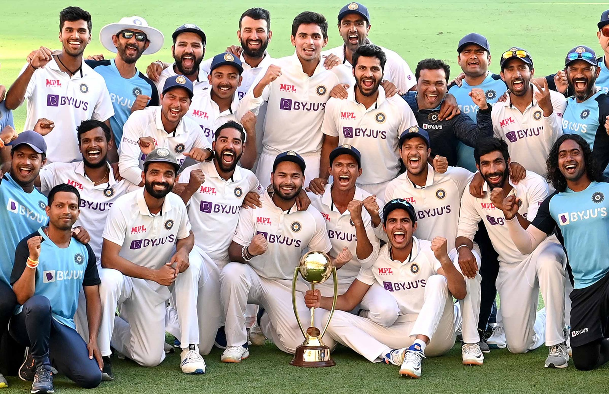
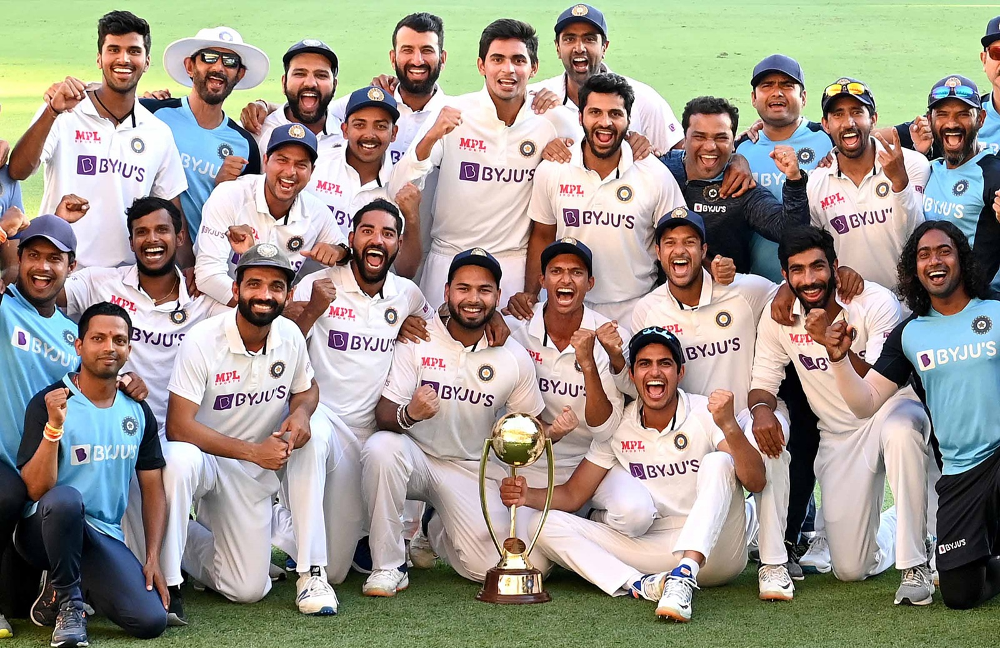

The Gabbatoir Breach
When play began on the final day, India still needed 328 to win with 10 wickets in hand. At 167 for 3, after the dismissal of skipper Ajinkya Rahane, Pant walked in ahead of Mayank Agarwal. A boisterous Gabba began to fret as Pant’s enterprising innings brought the equation down to 69 off 15 overs with six wickets still standing. “This team was built on fearlessness and (players) backing their abilities from any position. The guys playing deep down knew they could get across the line, especially with how Rishabh was hitting the ball, and if the guys at the other end supported him,” Webb, Indian team’s former strength and conditioning coach, recalls.
As India chipped away, Australia’s bowlers began to panic. “Rishabh is a special player who is incredibly skilled, destructive and someone who backs his instincts. When we got to lunch on the final day, everyone was pretty calm. I was away from the main discussions at the time; however, the mood was that the team was up for the challenge. They certainly did that. I was extremely happy for every single team member.”
Cheteshwar Pujara was the glue that kept India’s innings together on the final day, taking blow after blow in an innings of 56 that consumed 211 deliveries. It gave the likes of Shubman Gill (91), Washington Sundar (22) and Pant (89 not out) the freedom to flourish. “Pujara is known as the brick wall for a reason. Not only for his ability to stay at the crease for long periods but to endure everything thrown at him,” Webb says. “Brick walls don’t come down easily. Everyone in the team knows Puji will do whatever it takes to get through tough periods for the team while he’s at the crease - including taking balls on the body.”
India batted with a giddy sense of freedom on day five, the centrepieces being stands of 114 between Pujara and Gill and 61 between Pujara and Pant. It took more than three of the best fast bowlers in the world to bring Pujara down. At one point, a short-of-a-length ball from Hazlewood jammed the fingers of Pujara’s right hand against the bat handle. Pujara was on the ground and writhing in pain. “Puji is a tough, resilient character. A man of process and focus,” Webb says. “Puji focuses on a mixture of physical conditioning, strength, batting and fielding practice throughout a week. Considering he wasn’t playing IPL before the Australian away series, he had extended time focusing on his individual needs in his home State. The way Puji plays his game, he expects to spend long periods on the field either batting, running between the wickets or in the field. For the Australian Test series, we had to ensure he was physically ready to meet those expectations and physical demands.”